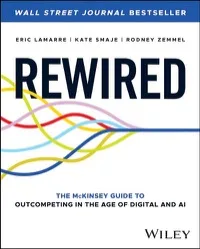
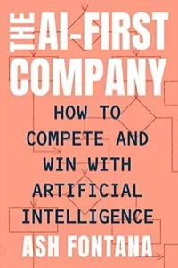
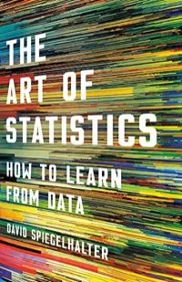

The stacks
25 books · 5 stacks
Organised by the job they do, not the section of the bookstore they came from.
Building intelligent systems
Stack A
The books open on the desk when designing platforms, patterns, and the gates between them.
AGENTIC AIAgentic Artificial Intelligence
BornetA practical map for moving from chatbots to agents that plan, act, and improve workflows.
The shared vocabulary for executive conversations about what an agent actually is — before the architecture debate starts.
The Checklist Manifesto
GawandeSimple operating systems prevent failure in complex, high-stakes work — surgery, aviation, finance.
The strongest argument for policy gates ever written. An approval gate is a checklist the system cannot skip.
The Art of Doing Science and Engineering
HammingTaste, courage, and asking the questions that make important work possible.
Read before every platform decision that will outlive you. "What are the important problems in your field?" applies to roadmaps too.
Universal Principles of Design
Lidwell, Holden & ButlerA compact reference of design patterns and cognitive principles.
Agent UX is still UX. Most "model failures" in production are affordance failures in disguise.

Rewired
Lamarre, Smaje & ZemmelAn enterprise playbook for turning digital and AI ambition into operating change.
The honest McKinsey answer to why pilots die: the operating model, not the technology, is the bottleneck.

AI First
FontanaCompanies designed around data, prediction, and machine intelligence from day one.
The lens for spotting which vendors are AI-native and which are AI-wrapped — it shows in the data architecture every time.
The frontier, soberly
Stack B
Capability claims without the conference-stage adrenaline.
THE SCALING ERAThe Scaling Era
Dwarkesh PatelFrontier labs, scaling laws, and the economics of intelligence — from the people inside.
The calibration source for timeline talk. When a vendor's roadmap contradicts what lab insiders say out loud, believe the insiders.
Superintelligence
BostromThe classic argument for taking advanced AI capability, control, and governance seriously.
The control problem at civilisational scale is the control plane problem at enterprise scale. Same shape, different blast radius.
Exponential
AzharFast-moving technologies structurally outrun institutions and markets.
Names the gap the Situation Room tracks daily: the distance between what technology permits and what institutions can govern.
The Beginning of Infinity
DeutschProgress comes from good explanations, criticism, and the unbounded growth of knowledge.
The philosophical case for why the knowledge layer compounds — and why explanations, not data volume, are the asset.
Judgment maintenance
Stack C
When routine cognition gets cheap, judgment is what's left to be good at.
The Great Mental Models
ParrishReusable thinking tools for seeing problems from multiple angles.
The pre-mortem kit for architecture decisions. Inversion alone has killed three bad designs this year.
Poor Charlie's Almanack
MungerMental models, incentives, and the discipline of avoiding obvious stupidity.
"Show me the incentive and I will show you the outcome" explains more vendor behaviour than any analyst report.

The Art of Statistics
SpiegelhalterWhat numbers can and cannot tell us about evidence, uncertainty, and risk.
The vaccination against benchmark theatre. Every model evaluation claim should pass through this book first.
The Lessons of History
DurantRecurring patterns in civilisation, power, economics, and human nature.
Perspective at fifty pages. Useful the night before any meeting that feels existential.
A Brief History of Thought
FerryThe major philosophical systems and what each means for living well.
The Ledger is philosophical on purpose: you cannot design what an institution should trust without a theory of what trust is.
Money, behaviour, cycles
Stack D
Eighteen years in banking says the constant isn't the instrument — it's the human holding it.
The Psychology of Money
HouselMoney outcomes are shaped by behaviour and time more than intelligence.
Also true of AI budgets. Institutions don't have model problems; they have patience problems.
The Changing World Order
DalioA macro-history of debt, empires, and the cycles that reshape global power.
The frame for reading sovereign AI investment — compute buildouts are reserve-currency behaviour by another name.
The Almanack of Naval Ravikant
JorgensonWealth, leverage, judgment, and independent thinking, distilled.
"Code and media are permissionless leverage" is the entire thesis of writing The Ledger in public.
The Richest Man in Babylon
ClasonDurable lessons on saving, discipline, and financial independence.
The book that proves good financial systems are old. Babylonian record-keeping was a ledger with governance. So is ours.
Buyology
LindstromThe hidden forces that shape buying decisions.
Enterprise AI procurement is not rational either. Knowing which forces are operating in the room is an unfair advantage.
Institutions and the humans inside them
Stack E
AI will expose weak institutions before it transforms strong ones. These books explain what institutions actually are.
Sapiens
HarariShared myths, institutions, and technologies shaped human history.
A bank is a shared story with an audit trail. So, increasingly, is an agent registry. Trust infrastructure is the oldest technology.
Unstoppable Us — How Humans Took Over the World
HarariHumanity's rise through cooperation, imagination, and power, told for young readers.
On the shelf because the best test of understanding is explaining it to a twelve-year-old. (Field-tested at home.)
Unstoppable Us — Why the World Isn't Fair
HarariInequality, hierarchy, and why societies become unfair.
The fairness questions children ask are the fairness questions AI governance committees ask. Children ask them better.
Gang Leader for a Day
VenkateshInformal power and the lived reality behind urban statistics.
A reminder that every org chart hides a real operating system. Map the informal one before deploying anything.
Focus
MillerIdentity, prejudice, and the cost of seeing people through categories.
The literary case against classification error — worth holding in mind while building systems that classify people at scale.